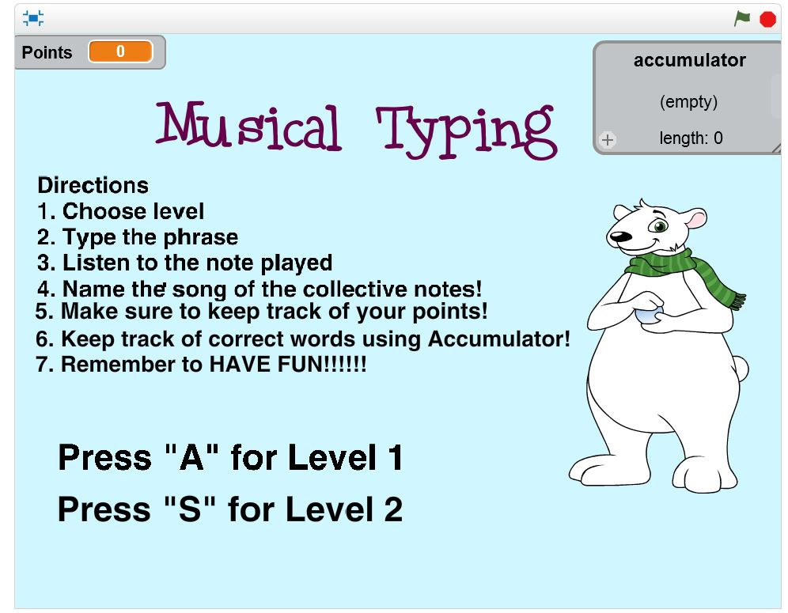
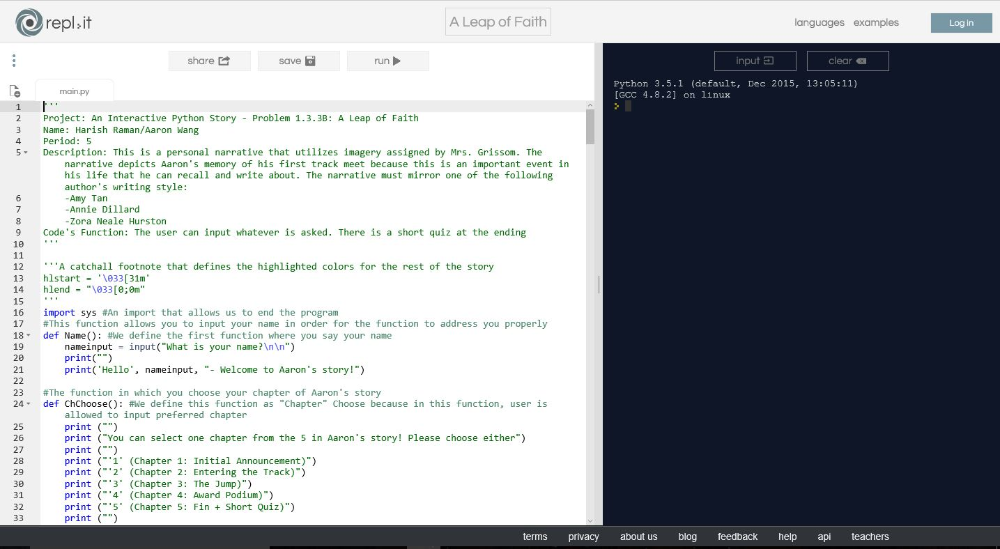
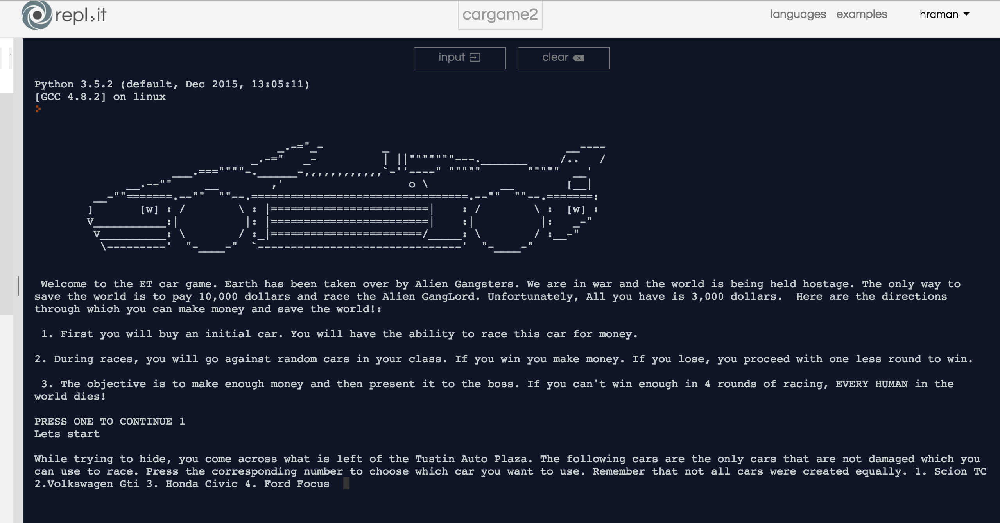

Portfolio
Scratch Project

This is the first scratch project. This project shows proficiency in basic block coding. Click the image on the left to go to the game! Press spacebar to control movement of Harishs head.
-

This is the second scratch project. This project shows an understanding of variables and tools in block coding. Click the image on the left to go to the game! Follow the directions given in the game and try it out!
-

This is the first python project. This project shows an understanding of usage of statements and variables that can be used through python. Click the image on the left to play with the interactive text! Follow the signs and it should be fairly easy.
-

This is the second python project. The game is surrounded regarding the premise of cars and racing. This project shows an understanding of complex variable tools, nested structures, for loops, and other programming rules. Click the image on the left to go to the game! Follow the directions given in the game and try it out!